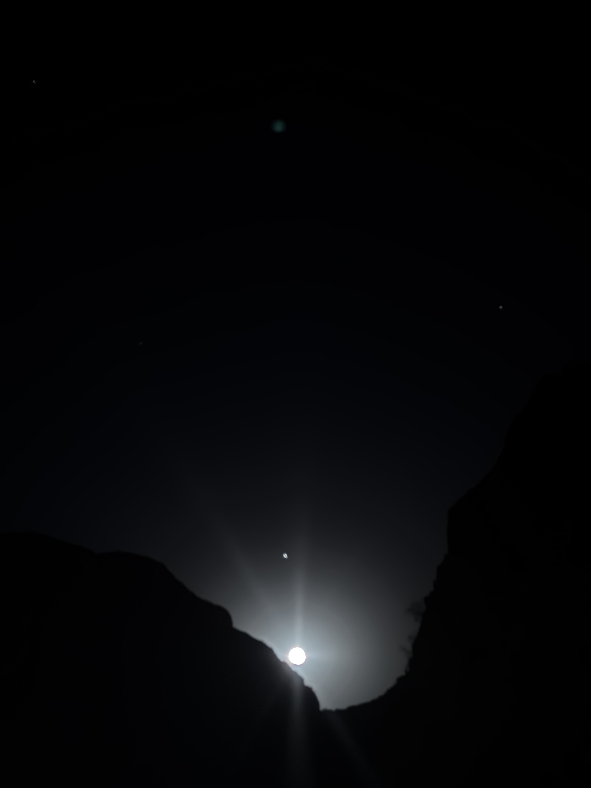
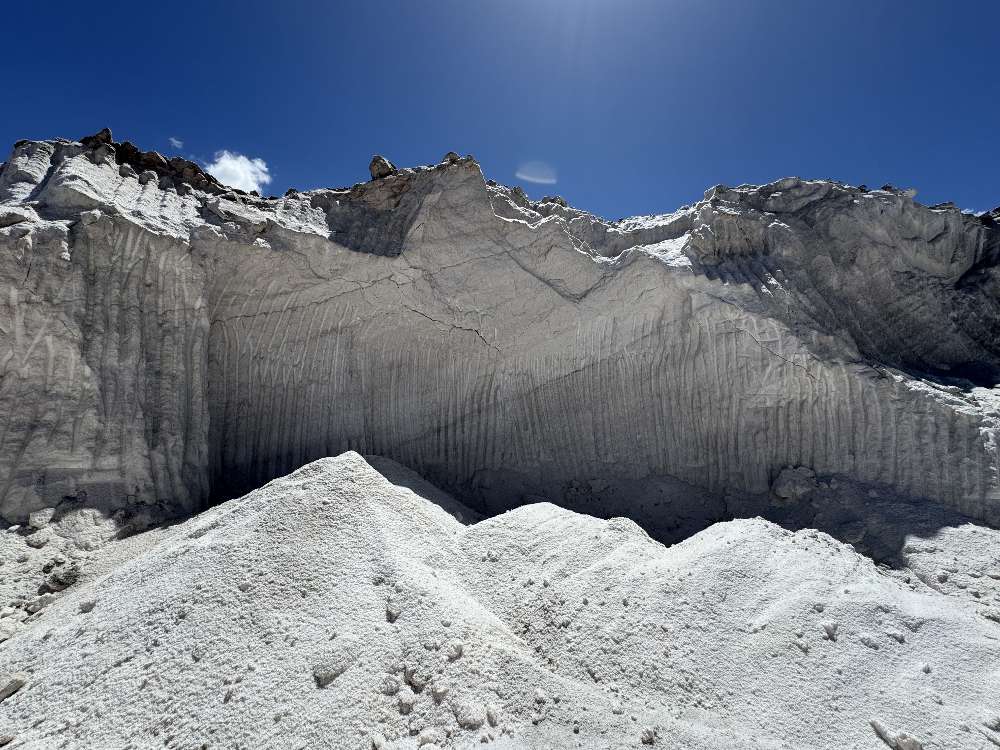
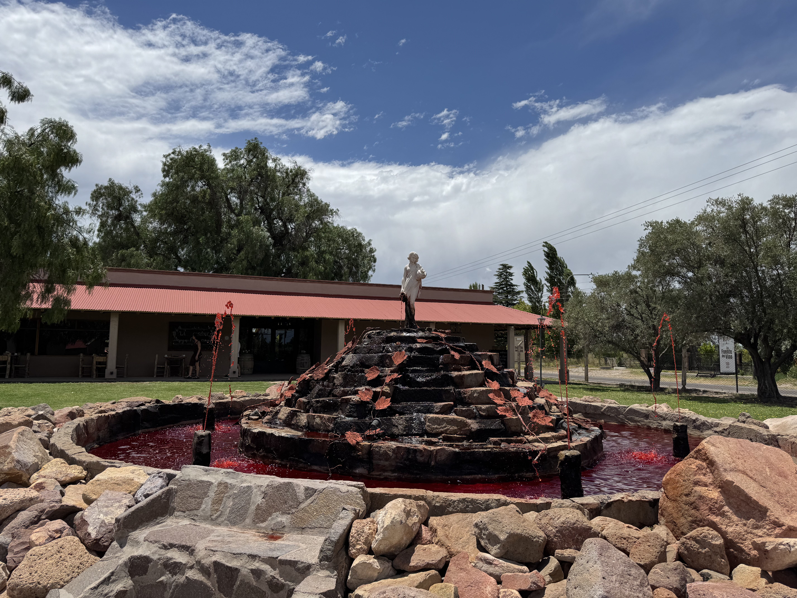

La luna saliendo entre las montañas de Los Reyunos se veía increíble.

Me sorprendió ver estas enormes paredes de sal.

Conocí la Fuente del Vino durante la visita a la Bodega Labiano.
Grabé este túnel mientras recorríamos Los Reyunos.